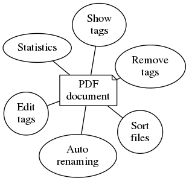

Welcome to the pdfmd documentation
For the tool visit pdfmd@rubygems.org.
Commands
pdfmd clean [filename]- Remove the metadata from a file.pdfmd configpdfmd edit [filename]- Edit the metadata of a file.pdfmd help- Show the help.pdfmd init- Setup environment (optional)pdfmd rename [filename]- Rename a file according to its metadata.pdfmd show [filename]- Show the metadata of a file.pdfmd sort [filename]- Sort the file to a destination.pdfmd stat [directory]- Show statistical data about files.
Features

Pdfmd can rename and sort away tagged documents automatically and make sure all files have a consistent name.
Files can be
- sorted
- tagged
- renamed
- viewed
- cleaned
- included in statistics
Installation
pdfmd
Install pdfmd as a ruby gem:
$ gem install pdfmd
hiera
The use of hiera is optional, but makes repeating tasks a lot easier.
Install hiera as a ruby gem:
$ gem install hiera